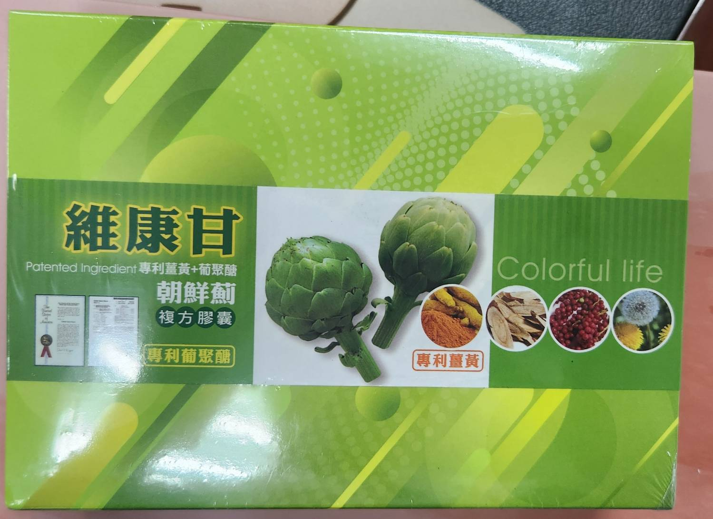
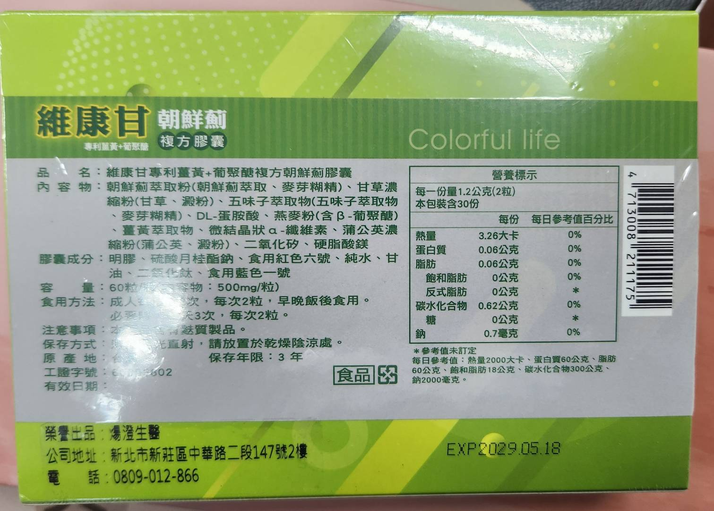

每天的忙碌之外，也想留一份餘裕給自己。 維康甘以朝鮮薊萃取為主角，搭配薑黃、燕麥β-葡聚醣、蒲公英等天然成分， 是滿意家想陪你維持的日常保養習慣。
| 品名 | 維康甘專利薑黃＋葡聚醣複方朝鮮薊膠囊 |
|---|---|
| 內容物 | 朝鮮薊萃取粉（朝鮮薊萃取、麥芽糊精）、甘草濃縮粉（甘草、澱粉）、五味子萃取物（五味子萃取物、麥芽糊精）、DL-蛋胺酸、燕麥粉（含β-葡聚醣）、薑黃萃取物、微結晶狀α-纖維素、蒲公英濃縮粉（蒲公英、澱粉）、二氧化矽、硬脂酸鎂 |
| 膠囊成分 | 明膠、硫酸月桂酯鈉、食用紅色六號、純水、甘油、二氧化鈦、食用藍色一號 |
| 容量 | 60粒，每粒內容物500mg，每一份量1.2公克（2粒） |
| 食用方法 | 成人每日2次，每次2粒，早晚飯後食用；必要時每天3次，每次2粒 |
| 注意事項 | 本產品含麩質製品 |
| 保存方式 | 避免光直射，請放置於乾燥陰涼處，保存年限3年 |
| 榮譽出品 | 煬澄生醫（新北市新莊區中華路二段147號2樓） |